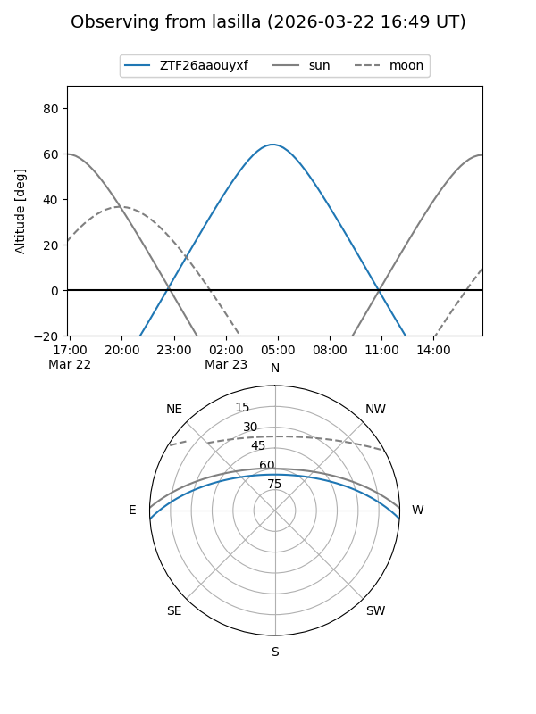
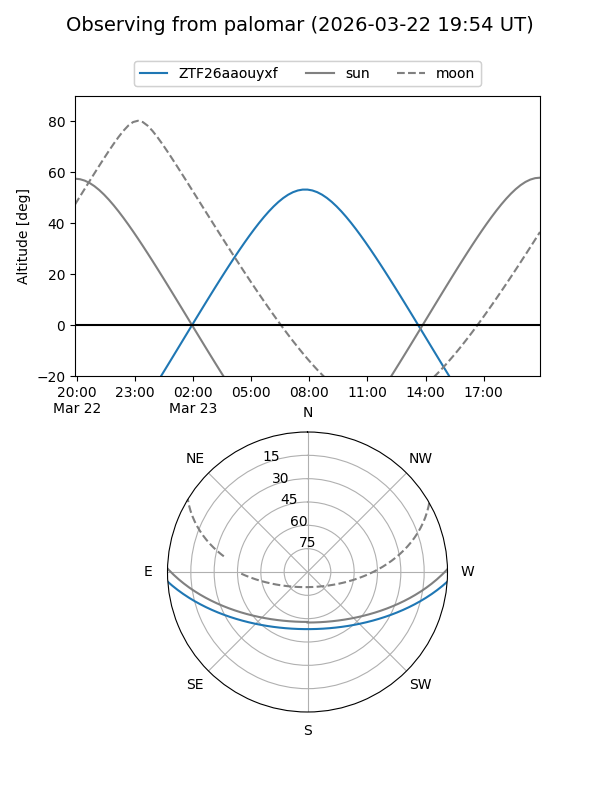

ZTF26aaouyxf
Target ZTF26aaouyxf at 2026-03-23 08:43
Aliases and brokers:
FINK: link
Lasair: link
ALeRCE: link
alt names
ZTF26aaouyxf (ztf,fink_ztf)
Coordinates:
equatorial (ra, dec) = 180.3652,-3.22043
equatorial (HMS+DMS) = 12:01:27.64,-03:13:13.55
galactic (l, b) = (279.3350,+57.34372)
Flags:
Photometry:
last ztfg=18.53
1 ztfg detections
Lightcurve
Visibility


Additional plots